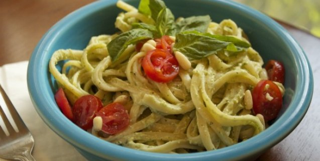

Avocado Cream Pasta
Time: 15 minutes
Cost: $5.60
Servings: 2-3

Ingredients
2 avocados, pitted and diced
1 clove garlic, minced
Juice of 1/2 lemon
1/4 cup unsweetened soy milk
1/4 cup water
Salt, to taste
Red pepper flakes, to taste
4 halved cherry tomatoes as garnish (optional)
2 cups cooked pasta
Instructions
1. Combine the avocados, garlic, and lemon juice in a food processor. As the mixture is blending, add the soy milk and then the water. Add more or less water depending on your desired consistency.
2. Add salt and red pepper, to taste.
3. Toss with your favorite cooked pasta and serve.
Source: https://www.peta.org/recipes/avocado-cream-pasta/